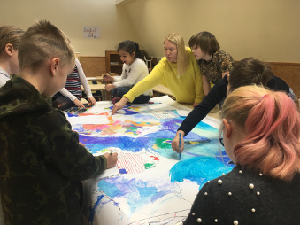

Esimesel päeval printis õpetaja neile suure maailmakaardi.
Teisel päeval hakkasid lapsed seda vildikatega värvima ja
vaikselt mõtlema milline nende mäng välja võiks näha, mis nad sinna peale teevad.
Lisaks sellele tegid nad ka teisi töölehti ja õppisid paremini maailmakaarti tundma.
Õpilasi oli seal umbes 15 aga neile kõigile jätkus tegemist.
Kui mõni ei mahtunud maailmakaarti tegema, siis tegeles ta teiste töölehtedega.
Vahepeal, kui mõni laps tahtis puhata siis tuli tema asemele uus.
Lapsed olid väga toredad. Enamus neist rääkisid meiega ja küsisid
igasuguseid küsimusi aga mõni ei tahtnud, et temast pilti tehakse ja läks
selleks ajaks kaugemale.
